RK3588 Linux SDK 开发及产品应用介绍¶
来源：原视频；讲者 Hans Yang。本文为按原顺序整理的忠实讲稿，保留课程当时的技术口径。源视频为720×360，局部小字受分辨率限制。
课程安排¶
今天给大家带来的课程介绍，主要是关于 RK3588 Linux SDK 的开发及对应的产品应用介绍。我会从我接触的开发者，或者客户公司的角度来看，针对这个 SDK，我们可以做哪些比较好、比较符合市场需求的产品出来。
本次直播课程大概有四个部分。第一部分，我们会介绍一下 RK3588 Linux SDK 适用的产品，大概可以做哪些主要的产品，是不是包括你们现在正在开发的产品类型。第二部分，会介绍一些我们 SDK 上面带的开发资源，给大家做一个整体介绍。大家在开发过程中可以适当注意，或者看一下哪些可以方便大家做产品的二次开发。第三部分，主要介绍一下开发和调试的流程有哪些需要注意的事项。最后一部分，会针对一些开发者的问题进行集中的解答。大家也可以现在留言给我们，等一下我们会针对大家线上的留言做统一回复。
适用产品：RK3588 与 RK3588S¶
第一部分就是 RK3588 适用产品的介绍。这一部分我们说的平台主要包括 RK3588，还有 RK3588S。
这两大块可以用于比较多的领域，包括我们主推的八大产品方向。Linux SDK 现在可以适用于 ARM PC、平板、扫地机器人，还有一些开源的开发板、行业或者工业类的机器人。另外也有一些厂商、客户伙伴用来做直播机，还有用于做车载的中控，再者就是会议大屏和手持终端。
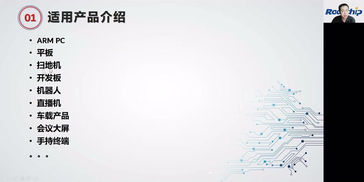
适用产品讲义：ARM PC、平板、扫地机、开发板、机器人、直播机、车载产品、会议大屏、手持终端。 · 原片 02:24
RK3588 和 RK3588S 主要就是接口比较丰富，性能比较强。针对封装，RK3588S 会有更小的封装、更低的功耗。从适用性来讲，这两个平台可以覆盖目前市面上大多数产品的开发。
首先说到 ARM PC，我们针对 ARM PC 开发了 BIOS，还有 EC。另外，针对 ARM PC 国产化的需求，适配了全国产化的硬件，或者对应的外设。大家如果对这块有兴趣，可以找我们沟通。平板的话，目前主要是用 RK3588S。
RK3588S 具备的，第一是多屏异显，然后有低功耗，非常适合做平板类型的产品，包括学习机这类产品。
第三个扫地机，RK3588 带有 6T 算力的 NPU，可以比较好地实现目前高端扫地机领域需要的一些机器学习功能。另外，我们在扫地机上面适配了 ROS 2 这个平台。大家可以基于我们这套 SDK，比较方便地部署扫地机的一些控制类开发。
第四块是开发板。大家可以知道，现在 RK3588 支持的接口和扩展非常丰富，有 PCIe 3.0，还有 SATA、双千兆以太网。很多开发者可能手上有我们的 EVB 板，现在市面上也会有一些客户公司开发的开源开发板，可以帮助大家做前期评估，或者直接做二次的定制开发。
第五个，也适用于做机器人的产品。因为 RK3588 支持多路摄像头输入，还带有非常强大的 PCIe 功能，可以做很多接口扩展，包括像近期的那个围棋机器人，是用我们瑞芯微其中一个平台去量产的，不是用 3588。就类似地，可以实现很多机器人的应用场景。
第六个就是直播机。直播机主要是，首先我们支持多屏异显，CPU 性能比较强大，网络的吞吐率或者网络延时都可以做到比较好的效果。车载的话，目前有比较多的车厂用于做车载产品。这块先简单介绍到这边。针对这些不同的产品，我们对应的都有在 SDK 当中做一些优化，或者对一些功能做定制开发。
开发资源：SDK 文档¶
第二部分，简单介绍一下 SDK 带的开发资源。第一部分就是 SDK 带的文档。其实大多数开发者，或者我们接触的客户，刚接触 RK 平台时问的一些问题，可能在文档里面都可以找到比较好的解决方案，或者一些介绍。
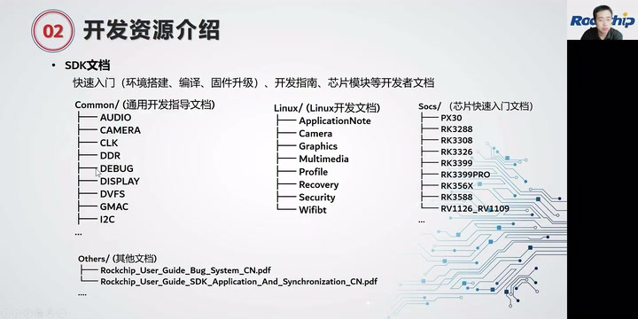
SDK 文档分为 Common、Linux、Socs、Others，覆盖通用模块、Linux 开发、芯片快速入门及其他指南。 · 原片 07:36
我们这边的文档主要分为几个部分。第一个是通用开发的指导文档，包括芯片上面带的模块介绍，还有开发介绍。另外一部分会有调试指南，这边还包括我们平台有适配过的CAMERA、DDR、eMMC、Wi-Fi、BT 的适配列表。大家在产品初期选型的时候，可以关注一下这部分，避免选了我们还没有支持的，额外增加一些适配的工作量。
第二部分，我们有开放 Linux 的开发文档。这边主要包括系统框架，还有应用层的文档：有应用、摄像头、图形框架、多媒体、升级、安全，还有 Wi-Fi、BT 相关文档。这部分文档，我们也会不断接收大家开发者的意见，去做迭代和完善。
再一块是关于芯片平台的入门文档。这里面主要包括每个芯片平台 SDK 的发布说明、芯片的 Datasheet，还有 SDK 入门指南，会放在各个芯片对应的目录下面。可以看到，我们 Linux SDK 目前有做多款芯片的支持。
最后，当大家开发过程中遇到问题，可以反馈到我们 FAE 的 Bug 处理平台。这边有对应的操作说明。建议大家提问题的时候说明清楚：第一，使用的芯片平台是哪一个；第二，用于这款芯片平台开发哪一种产品。
第三，问题要描述清楚；第四，调试问题的日志，或者调试过程的记录，要上传一下。这样可以减少不必要的、多余的时间浪费。这部分大概就是文档的介绍。
也有很多开发爱好者会在一些论坛或者博客上，分享瑞芯微的一些开发说明或者指导，大家也可以多去看一下。但是那些不是官方写的，可能有些不一定准确，所以大家合理地去看待。
SDK 工具：开发调试与量产¶
第二块是工具的介绍。其实很多开发者，如果以往有开发过 RK 平台，对这些工具都比较了解。我这边简单做一个介绍，有些可能刚接触。我们的工具主要包括几大块：第一块是开发调试过程中会用到的，第二块是量产时会用到的，主要包括这两块。
根据搭载系统的不同，可以分为 Windows、Linux，还有苹果电脑。现在主要支持这三种系统的开发。基本上大多数工具都支持 Windows 和 Linux，苹果系统下面可能只有一些烧录工具。这边先介绍几个工具。
RKDevTool 是我们的烧录工具，FactoryTool 是量产升级工具。这两个都可以做烧录使用，后者在量产时可以做一拖多，通过 USB 进行烧录。还有一种量产方式是 SDDiskTool，这是 SD 卡镜像制作。有些板载只带 SD 卡的产品，可以用这个工具做 SD 卡启动卡。还有一个工具，很多产品用预烧录的方式去做，可以用这个烧录器升级工具去做。这四个是我们的工具。
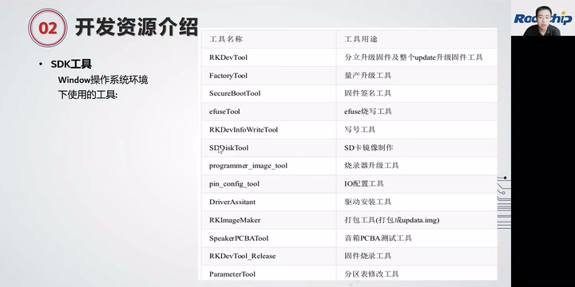
Windows SDK 工具表，包括烧录、量产、签名、eFuse、IO配置及分区表修改工具。 · 原片 12:36
还有一些在量产时会用到的，包括固件签名的工具，它可以把固件进行签名加密，做安全启动功能。efuseTool 就是，有些平台的芯片带 eFuse，eFuse 烧写工具可以把密钥烧到 eFuse 分区去。
我们还有一些调试工具，几个比较好用的，我这边介绍一下。一个是 pin_config_tool，是 IO 配置工具。大家经常会找我们要芯片的 TRM 手册，这个工具可以进行当前芯片上面所有 IO 状态的查询。
也可以实时配置生效，作为 IO 调试是比较方便的。最后一个是 ParameterTool，是分区表修改工具。我们分区表文件，有些朋友一直反馈，包括格式、要求，可能比较难明白，可以用这个工具做分区表调整。
第二部分是 Linux 对应的一些工具。这些工具基本上和 Windows 下的工具对应，所以我这边不再重复介绍。
UEFI：系统引导与硬件抽象¶
接着讲一下 SDK 上面其他的开发资源，主要讲跟大家开发比较有关系的。第一部分，是我们在 RK3588 首次实现的 UEFI。这个主要是为了 ARM PC，或者做一些开源开发板、盒子 PC 产品，可能会用到。这一部分会替代我们原来的 U-Boot，作为系统的初始引导部分。
比较熟悉电脑安装的同学应该比较清楚 BIOS，它就是类似 x86 架构下的 BIOS。它主要完成几个功能：主要是做硬件初始化，提供硬件的软件抽象；第二是操作系统的引导和启动；第三个就是可以支持多系统。
然后可以做系统备份。另外，它可以显示类 BIOS 的界面，安全性功能也可以完整实现。安全功能可以搭配芯片内部的 OTP，或者外挂的 TPM 芯片来实现。
实现这个的目的是将硬件差异和 OS 系统作一个剥离。也就是说，有了 UEFI，系统在启动时可以自动探测硬件信息，或者获取 UEFI 里面的对应配置，传递给 Kernel 和系统。这样就可以做到，比如说一个统信系统，可以支持多台、或者多款 RK3588 的设备，系统部分可以不需要修改。
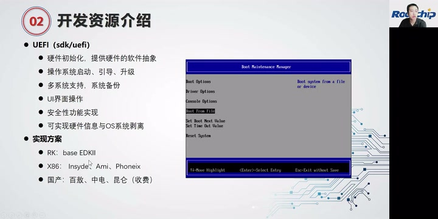
UEFI 功能与实现方案：RK 基于 EDK II，画面列出 x86 与国产 BIOS 方案及 Boot Maintenance Manager。 · 原片 17:34
RK 实现的方案是基于 EDK II，它区别于传统的 x86 框架。国产 BIOS 主要是百敖、中电、昆仑，它们这些都是收费的。我们目前 UEFI 是有做到全部开源的。大概的界面是这样子，区别于我们之前 U-Boot 启动的那套 Logo。这边是 GRUB 的应用，可以支持加载不同系统。这边显示的是 Debian 11 的 GRUB 界面，可以做引导和恢复，包括备份系统的功能。
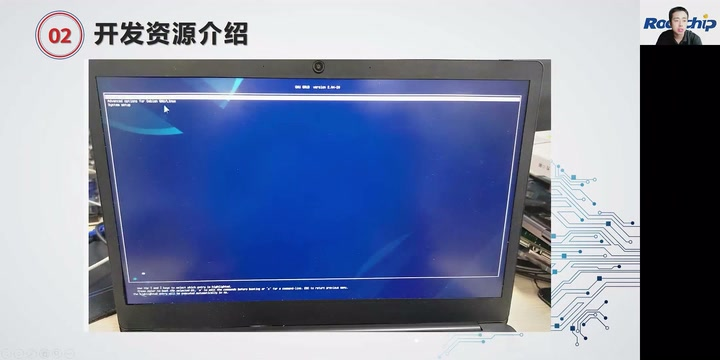
Debian 11 的 GRUB 引导界面，讲者用于说明多系统加载、引导恢复与备份。 · 原片 18:14
多媒体开发：GStreamer 与 Rockit¶
接着介绍一下多媒体开发。我们主要支持两套：第一套是使用 GStreamer，作为通用 Linux 的多媒体框架；另外也同样支持 Rockit 来做多媒体开发。
两者的区别是，如果大家有带桌面的，或者是基于 Buildroot、基于 Debian 去构建自己的软件产品，用 GStreamer 比较合适。如果希望只基于 RK 的内核和基础的一些核心库，自己去搭建框架和应用，实现产品功能，建议用 Rockit。
Rockit 有实现一整套对应的 API，包括编码、解码、显示、拼接等一系列 API。这一套现在在通用 Linux 上已经刚刚发布。
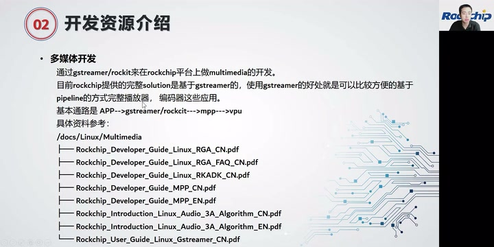
多媒体开发通路 APP → GStreamer/Rockit → MPP → VPU，以及 docs/Linux/Multimedia 文档目录。 · 原片 20:00
基本通路就是，最上层 APP，比如具体的一个播放器，有可能是大家开发者自己开发的，或者开源的播放器。接下去调到框架的 GStreamer、Rockit，这属于媒体框架；再往下，编解码调到的是我们提供的 MPP 库；再底下就调用到内核的 VPU 驱动。这是整体的通路。具体的话我们有一些文档，大家可以在 docs 目录下面获取到。也有很多客户希望能够支持其他媒体框架，或者播放器，其实理论上 RK3588 都可以支持。可能大家到时候提问题，可以把需求明确一点，咱们再看怎么样去适配比较好。
图形开发¶
接着就是图形开发，这也是大家在开发过程中比较需要用到的。目前提供的 Buildroot 和 Debian，Buildroot 默认使用 Wayland 图形框架，Debian 默认使用 X Server 图形框架。在文档里面，也有介绍具体哪个图形框架更适用于大家。这也是目前比较常见的。
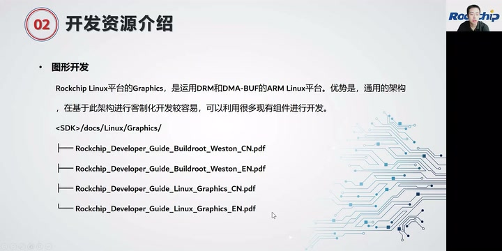
图形开发讲义：Rockchip Linux Graphics 使用 DRM 和 DMA-BUF，相关指南位于 docs/Linux/Graphics。 · 原片 21:34
还有一种，就是不基于 Wayland、不基于 X Server，比如直接自己去构建 UI 框架，可以使用 Rockit 的 VO 相关接口，自己做一些分屏、OSD，一些简单显示，也可以不依赖于这些显示框架。
我们还有一些应用开发介绍，主要是 RK 自身带的预置 Demo，包括 Docker、ROS、配网、播放器，包括一些 Launcher 的应用，大家可以参考。但是可能我们释放的 Demo 或者应用，还没有办法达到实际产品化。就是说大家直接拿去产品化，可能会觉得我们的UI 设计或者一些功能都比较简陋，但可以作为参考。如果大家在我们 Demo 上面测试出问题，我们也会配合一起看一下。因为从零去搭建一个产品，我个人理解是比较困难的。有时候我们有一些现成 Demo，也有包括 RTSP 推流、浏览器前端和后端实现的 Demo。如果有些厂商刚开始做某一类产品，我们提供的这些东西，还是有一定参考价值，或者说我们提供的部分都可以直接测试使用。
安全机制开发¶
还有一部分，就是现在市面上的产品越来越关注安全机制。我们 RK3588 支持全链路的安全方案，它包括安全启动。
固件的签名加密、固件防回滚，还有分区数据的加密，这些在对应文档里面都有参考说明。另外，最近我们在 SDK 上面对这部分安全功能，包括编译或者测试流程，做了一些简化。之前步骤相对有点麻烦，这部分最近有做优化。如果大家目前产品上面会用到强安全性，可以参考文档做验证，遇到问题也可以反馈给我们。
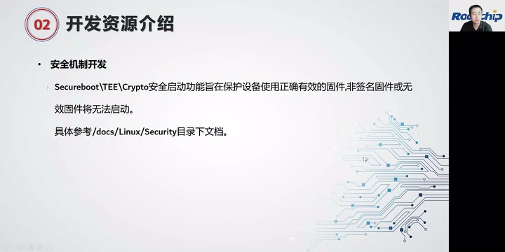
安全机制开发讲义列出 Secureboot、TEE、Crypto，并给出 docs/Linux/Security 文档路径。 · 原片 24:58
Wi-Fi / BT 与初始固件¶
另外还有 Wi-Fi、BT 开发。我们在 Linux 上面适配了比较多的模组和芯片，大家可以参考底下的文档做适配。
最后第三部分，我们讲一下开发和调试流程。第一，我们系统支持 Buildroot、Yocto 和 Debian。
针对 SDK，会提供这些系统的初始固件，大家可以对应地下载在 EVB 板上；或者这些 RootFS 可以下载到大家自己的板子上，做测试和调试。
开发调试流程¶
针对不同产品形态的开发，大致步骤可能有这几个点。第一个是检查系统需求：第一个是开发环境的系统需求，还有大家产品的系统需求。这需要在开发之前比较明确，包括你做的产品能不能使用 Linux SDK 来做，在前期大家就需要跟我们做好沟通。
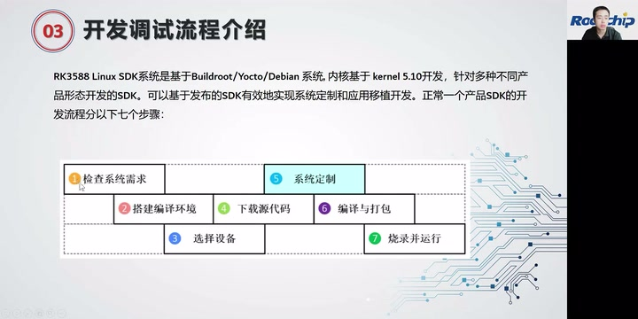
开发调试流程原图：检查需求、搭建环境、选择设备、下载代码、系统定制、编译打包、烧录运行；页首标明 Buildroot/Yocto/Debian 与 kernel 5.10。 · 原片 26:47
第二个是搭建编译环境，我们有对应的操作指南提供给大家。第三个是选择调试设备。一开始可以选用我们官方的 EVB 板，或者大家自己公司设计的硬件，进行调试。
第四部分是要做固件烧录——不是，这是下载源代码，就是从我们官方获取源代码，或者更新源代码。第五个，针对自己的产品特点，还有自己板子的情况，做系统定制和裁剪。第六就是编译和打包，第七就是烧录并运行。第四到第七这几个步骤，可能会贯穿大家整个产品的开发周期。就是说，希望大家定期接收我们提供的简报更新，看一下近期 SDK 有哪些修改，或者哪些新功能添加，大家获取、更新新的代码。第五个是做系统定制。这定制过程中难免会遇到问题，可以和我们 RK 的技术窗口交流。第六个，编译打包和烧录运行，就是大家调试过程中会经常用到。
Loader 与 U-Boot 开发¶
我接着介绍，我们 RK3588 平台主要分为几大块开发。从开始，第一部分是 Loader 部分，主要作为芯片前级的引导部分。目前都是集成到 U-Boot 目录下面，还有 rkbin 目录下面。rkbin 目录带有开机引导的几个关键部分，包括 DDR 初始化程序 DDR bin，然后 SPL，还有下载用的 USB Plug，以及 Trust 部分用到的 BL31 bin、BL32 bin。
这部分基本上不需要大家做太多改动。一级引导，我们基本上做到了所有设备兼容。如果遇到板子起不来等问题，可以反馈给我们。一般可能主要是硬件供电，或者 DDR、Flash 颗粒还不在适配列表当中，需要调试。
大家主要会用到的开发，第一部分可能就是 U-Boot。我们现在维护的是 next-dev 分支。在 U-Boot 下面有提供 RK3588 基础配置，可以实现这边提到的大部分功能。大家可以在 U-Boot 下做二次开发，包括定制自己的分区表、启动流程、Logo。我们有提供比较完善的文档，包括模块开发、调试，可以方便大家做处理。
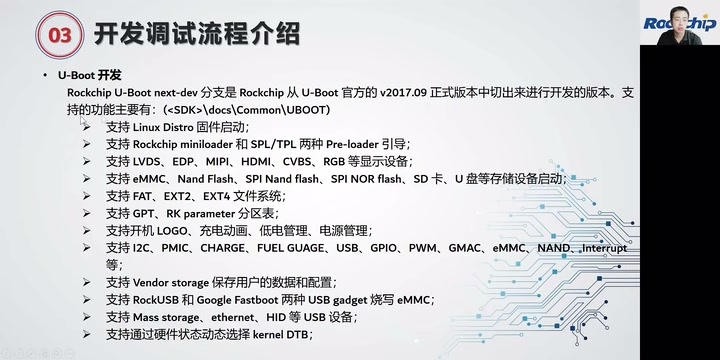
U-Boot next-dev 讲义，说明基于官方 v2017.09 版本并列出引导、显示、存储、分区及USB等支持功能。 · 原片 30:28
Kernel 与 Recovery 开发¶
接着就是 Kernel 开发。大多数开发者需要首先配置自己板级的 DTS。因为现在做硬件描述，还是用 Kernel Device Tree 去描述。后续我们也在开发 ACPI 的实现，现在有些模块已经支持了。大多数还是要先配置我们的 DTB。
3588 这边相比其他平台，电源域已经不需要配置了。第二块，对应发布的硬件参考设计，我们软件上有对应的 DTS，包括 DTSI，大家可以参考。如果使用哪一个硬件参考设计，可以使用对应 DTS 进行配置。因为 RK3588 确实涉及到的外设接口比较多，可能如果用错了参考配置，有些功能会有异常。再一个是 Recovery 开发。Recovery 现在主要用于升级，或者恢复出厂设置，这个我们也有提供比较完整的文档。
目前升级支持 A/B 分区升级，也支持通过 Recovery 对完整镜像升级。大家可以根据 Recovery 提供的一些接口，定制自己的升级流程和方案，具体问题可以跟我们交流。
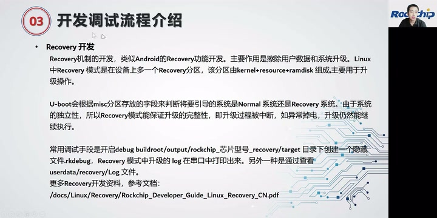
Recovery 开发原画面，介绍独立 Recovery 分区、misc 引导判断、升级中断恢复及调试日志。 · 原片 32:48
OS 开发：Buildroot、Debian、Yocto¶
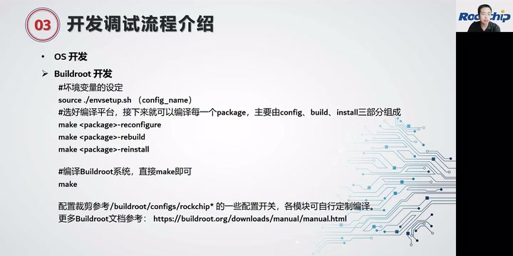
Buildroot 编译讲义：source ./envsetup.sh (config_name)、单包 reconfigure/rebuild/reinstall 和整体 make，以及裁剪配置参考。 · 原片 33:54
画面中的 Buildroot 操作：先设环境与配置名，再编译单包或系统。配置裁剪参考
/buildroot/configs/rockchip*。
source ./envsetup.sh (config_name)
make <package>-reconfigure
make <package>-rebuild
make <package>-reinstall
make
OS 开发我们主要介绍三个。一个是 Buildroot 开发，在开发指南或者 Quick Start 里面会介绍 Buildroot 怎么样选择自己板级配置，怎么样搭建对应编译环境，以及做 Buildroot 编译。
Buildroot 相比 Debian 11，可定制化更强。它可以把整个系统裁剪到非常小，比如小到几兆，或者大到几 G。里面提供了一些官方开源软件包支持，也就是说大家可以比较容易做一些软件包适配，不需要自己花太多精力做第三方软件包移植。
我们也有提供裁剪配置的文档参考，大家可以根据自己产品类型，去掉不需要的软件包。这样整个系统会更加精简，整个固件会小一点。
接着是 Debian 11 的开发。它主要基于 X Server 的显示架构，我们添加了 RK3588 一些硬件模块的支持，包括 GPU 的 libmali 加速，包括视频编解码加速。最近我们整理了比较完整的开发文档，大家可以参考这份文档做 Debian 开发。里面有提到怎么样把 Debian 系统变得更小一点。
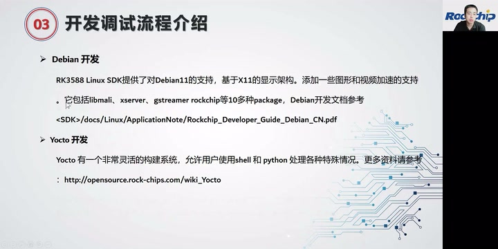
Debian 11 与 Yocto 开发讲义：X11、libmali/xserver/GStreamer 软件包以及参考文档。 · 原片 34:56
再一个是 Yocto 开发。Yocto 是一个非常灵活的构建系统，它构建的方式和 Buildroot 比较不一样。这里也提供了几种配置给大家选择，比较容易搭建出大家想要的基础系统。这就是系统方面。
接下来举个例子，因为现在 RK3588 支持好多种不同的操作系统。系统方面，除了官方发布的 Buildroot、Debian，我们现在也有在和麒麟、统信、鸿蒙，还有各种第三方操作系统，包括前面有人提到的，有些有版权的，我这边就不说了。这边是一个比较大的系统框架。
第三方系统适配：硬件、内核与用户空间¶
也就是说，不同系统如果想把 RK3588 的硬件能力完全发挥出来，需要做系统层面的适配。这边举个例子，介绍怎么样在第三方系统上做，这也是我们适配 Buildroot、Debian 时需要做的事情，大家会比较清楚整个软件的层次或者架构。
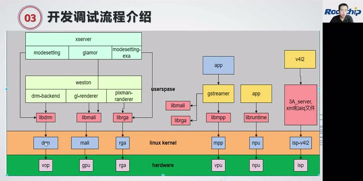
系统框架原图：用户空间适配库连接 Linux Kernel 驱动与 VOP、GPU、RGA、VPU、NPU、ISP 硬件。 · 原片 38:05
最底层是 RK3588 对应的硬件部分。第一个是显示的 VOP，然后是 GPU，做 3D 图形加速；这边有 RGA，主要做 2D 加速，现在主要用于缩放、旋转功能；VPU 主要做硬件编解码，里面有比较多核心，这里统称 VPU；再一个是 NPU，就是 AI 计算单元；还有 ISP。我们目前对接麒麟、统信、鸿蒙，都是以类似方式支持。
主要架构，先说显示部分。显示部分目前主要支持 X Server，还有 Wayland，它们通过对应接口调到底下 libdrm，最终调到 Kernel 的 DRM 框架。libdrm 就是中间框架的适配层，我们这边有提供对应库。
libmali 就是这边标的这一块。标红色部分是系统适配层面需要做对接的，黄底这一部分是内核驱动已经支持的。也就是说，不管什么系统，黄色的 Linux Kernel 其实不需要变动。咱们只需要把红底这些对应地适配到各个系统上面，系统硬件加速功能就完全实现了。
接着往下细讲，这是刚提到的几种方式。我举例说明，以 RK3588 适配，我们主要以 overlay 方式，对一些硬件单元做加速处理。这边提供了文档，细节大家可以看一下。
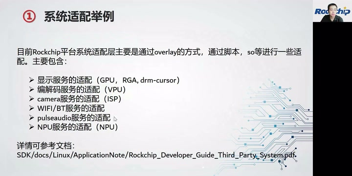
系统适配举例：overlay、脚本和 .so 适配显示、编解码、Camera、Wi-Fi/BT、PulseAudio、NPU 等服务。 · 原片 39:48
显示服务适配：GPU¶
针对 RK3588 的 GPU，我们提供两种显示框架支持，就是刚才提到的 X Server 和 Wayland。对应提供了 Debian 下的安装包，大家也可以根据提供的 lib 库，做其他平台适配，大体逻辑比较一致。
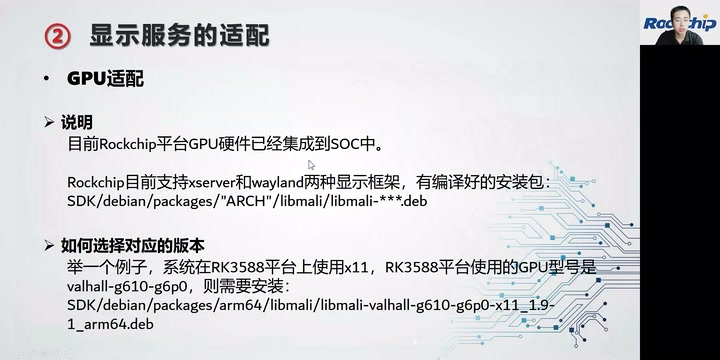
GPU 适配讲义，给出 X Server/Wayland 支持、libmali 安装包路径及 RK3588 X11 版本示例。 · 原片 40:10
画面示例：RK3588 使用 X11，GPU 型号
valhall-g610-g6p0，对应安装包为SDK/debian/packages/arm64/libmali/libmali-valhall-g610-g6p0-x11_1.9-1_arm64.deb。通用路径为SDK/debian/packages/"ARCH"/libmali/libmali-***.deb。
如果大家发现在系统上面，比如说调 OpenGL ES出现问题时，可以排查 libmali 库是不是正确安装了，GPU 是否正确跑起来了。
RGA、硬件鼠标与 X Server¶
第二个是 RGA 适配。RGA 主要用于一些 2D 图形加速，包括旋转、裁剪和缩放。现在在视频、GStreamer 里面的处理，就用到一些 RGA 加速；包括一些浏览器上面，也用到 RGA 加速。这里封装出了比较完整的接口，供大家调用。比如用于 AI 前处理的一些图像缩放，也可以用于视频播放时的旋转。大家可以灵活应用 RGA，实现自己想要的功能。
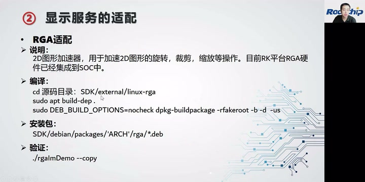
RGA 适配原画面：SDK/external/linux-rga，Debian 编译命令、rga 安装包与 ./rgaImDemo --copy 验证。 · 原片 41:13
画面中的 RGA 编译、包路径与验证（保留课程拼写）：
cd SDK/external/linux-rga
sudo apt build-dep .
sudo DEB_BUILD_OPTIONS=nocheck dpkg-buildpackage -rfakeroot -b -d -us
# 安装包：SDK/debian/packages/'ARCH'/rga/*.deb
./rgaImDemo --copy
这个是我们实现的硬件鼠标支持，主要解决 VOP 驱动上面的一些限制。在各个系统上，在 Debian、麒麟或统信上，都需要安装。
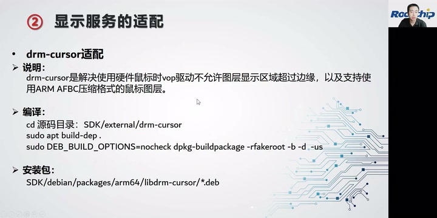
drm-cursor 适配原画面：解决鼠标图层越界限制、支持 ARM AFBC，以及源码、编译和安装包路径。 · 原片 41:50
画面说明：drm-cursor 解决 VOP 硬件鼠标图层显示区域不能越过边缘的限制，并支持 ARM AFBC 压缩格式鼠标图层。源码为
SDK/external/drm-cursor，使用同页的sudo apt build-dep .与sudo DEB_BUILD_OPTIONS=nocheck dpkg-buildpackage -rfakeroot -b -d -us编译；安装包为SDK/debian/packages/arm64/libdrm-cursor/*.deb。
X Server 我们目前有自己维护一个版本。如果大家用开源第三方版本，可以将 X Server 对应的 RK3588 适配补丁挪过去，就可以用了，包括可以使用 RK3588 的适配。
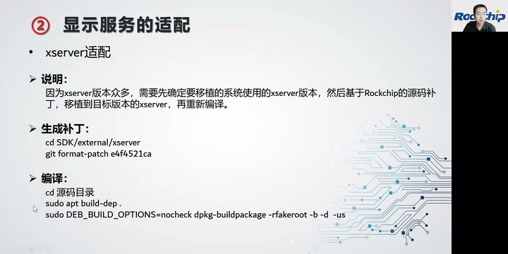
X Server 适配原画面：向目标版本移植 Rockchip 补丁后重新编译，包含生成补丁命令。 · 原片 42:14
画面中的补丁生成及编译步骤：
cd SDK/external/xserver
git format-patch e4f4521ca
# 移植到目标版本后，在其源码目录编译
sudo apt build-dep .
sudo DEB_BUILD_OPTIONS=nocheck dpkg-buildpackage -rfakeroot -b -d -us
编解码服务：MPP 与 GStreamer¶
MPP 适配，这部分有提供直接接口，供大家调用硬件编解码模块。它的接口，我觉得也不是特别友好。如果大家觉得 MPP 用起来比较麻烦，可以直接调用 GStreamer，或者调用 Rockit，因为它对 MPP 做了一次二次封装。
如果有些客户或者开发者，想直接调用硬件接口，提高一些效率，就可以直接调 MPP 这边的接口。MPP 下面有提供编码和解码的 Test Demo，可以直接测试当前系统的硬件编解码模块是不是正常。
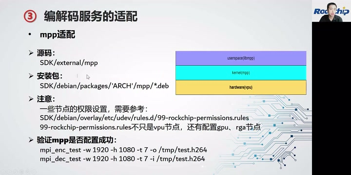
MPP 适配原画面：源码、安装包、99-rockchip-permissions.rules 权限规则及 mpi_enc_test/mpi_dec_test 验证参数。 · 原片 43:06
画面中的 MPP 源码为
SDK/external/mpp，安装包为SDK/debian/packages/'ARCH'/mpp/*.deb。节点权限参考SDK/debian/overlay/etc/udev/rules.d/99-rockchip-permissions.rules，不仅包含 VPU，也配置 GPU、RGA 节点。验证命令：
mpi_enc_test -w 1920 -h 1080 -t 7 -o /tmp/test.h264
mpi_dec_test -w 1920 -h 1080 -t 7 -i /tmp/test.h264
GStreamer 我们也维护了一个标准仓库，大家可以直接使用。目前我们主要使用 GStreamer，作为多媒体测试框架，包括自身一些视频兼容性或者性能优化，都是基于 GStreamer 做的，大家可以参考。如果大家对于 Linux 平台上编解码性能有疑虑，或者觉得自己播放器达不到，可以做个对比，咱们可以讨论如何做对应优化。
后面我们也会收集更多意见，看有没有需要支持更多媒体框架，因为有些其他问题，导致我们现在没有去做支持。这是播放的，这边就简单带过。
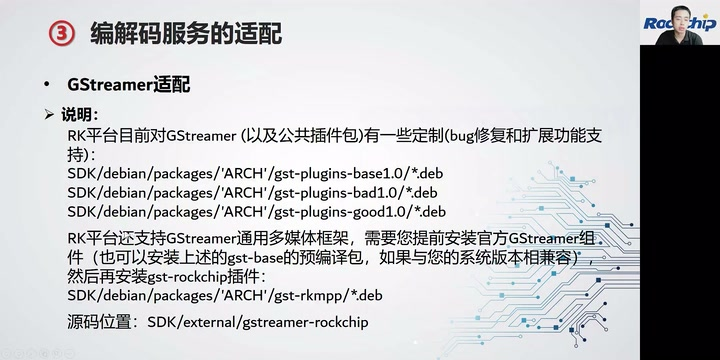
GStreamer 适配原画面：公共插件预编译包、gst-rkmpp 插件及 SDK/external/gstreamer-rockchip 源码路径。 · 原片 43:52
画面列出的公共插件包路径：
SDK/debian/packages/'ARCH'/gst-plugins-base1.0/*.deb、gst-plugins-bad1.0/*.deb、gst-plugins-good1.0/*.deb（后两者使用同一前缀）。先安装官方 GStreamer 组件；系统版本兼容时也可安装这里的预编译组件，再安装SDK/debian/packages/'ARCH'/gst-rkmpp/*.deb。源码为SDK/external/gstreamer-rockchip。
也就是说，MPP 有比较多 Test Demo，可以给大家测试或者参考。
Camera、Wi-Fi / BT 与音频适配¶
Camera 适配，这边主要提供 Linux 平台上 3A 效果的调试，或者实现的内容。这边有具体测试命令，可以看当前 3A 服务是不是正常。
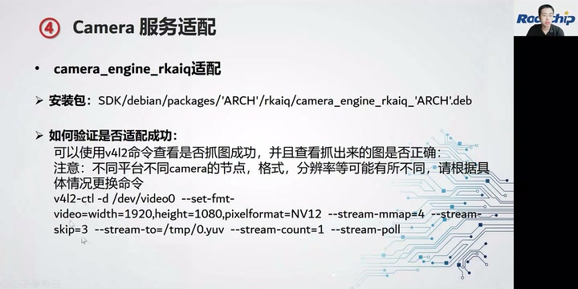
Camera camera_engine_rkaiq 适配及 v4l2-ctl 抓图验证命令；讲义提醒节点、格式、分辨率须按具体平台调整。 · 原片 45:08
画面中的安装包：
SDK/debian/packages/'ARCH'/rkaiq/camera_engine_rkaiq_'ARCH'.deb。用 v4l2 抓图并检查图像是否正确，不同平台的节点、格式、分辨率可能不同，需按具体情况更换命令：
v4l2-ctl -d /dev/video0 --set-fmt-video=width=1920,height=1080,pixelformat=NV12 --stream-mmap=4 --stream-skip=3 --stream-to=/tmp/0.yuv --stream-count=1 --stream-poll
Wi-Fi、BT，我们针对不同 Wi-Fi 模组，提供了对应实现方案。大家可以按照我们的适配列表，对 Wi-Fi、BT 进行调试。
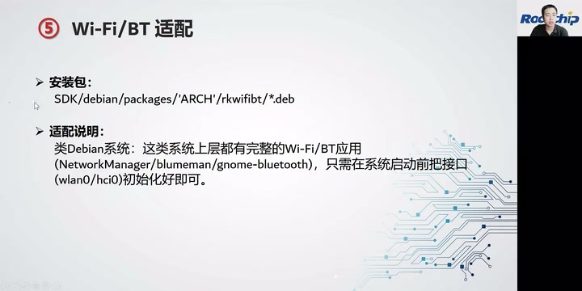
Wi-Fi/BT 适配：rkwifibt 安装包；类 Debian 系统在启动前初始化 wlan0/hci0，使用上层网络与蓝牙应用。 · 原片 45:28
画面中的包路径为
SDK/debian/packages/'ARCH'/rkwifibt/*.deb。类 Debian 系统上层已有 NetworkManager、blueman、gnome-bluetooth 等应用，只需在系统启动前初始化好wlan0/hci0接口。
音频适配，如果是类似 Debian、统信、麒麟，主要还是走 PulseAudio 音频框架。我们针对这个框架，对 3588 有对应声卡软件配置，大家可以直接使用，或者针对自己板级稍微改动，就可以实现不同系统上音频支持。因为有很多客户反馈：“我在 Debian 上面测试可以，但在 Ubuntu 上面又不行。”所以这个可以参考配置一下。
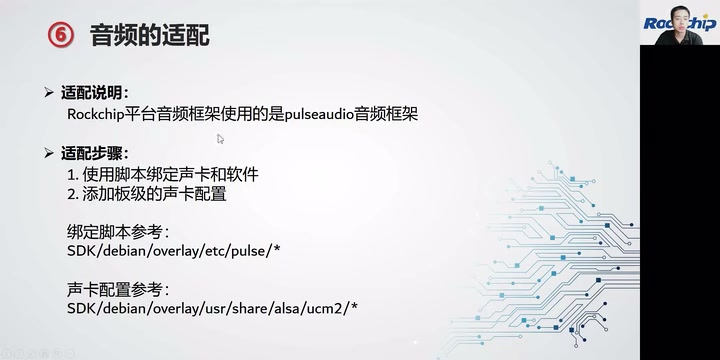
音频适配：绑定声卡与软件、添加板级声卡配置；原画面给出 pulse 与 alsa/ucm2 配置路径。 · 原片 46:17
画面中的适配顺序：使用脚本绑定声卡和软件，再添加板级声卡配置。绑定脚本参考
SDK/debian/overlay/etc/pulse/*，声卡配置参考SDK/debian/overlay/usr/share/alsa/ucm2/*。
NPU 适配¶
NPU，我们在 SDK 中提供了比较多工具和文档，也可以从我们 GitHub 上获取最新 RKNPU 更新。现在这个工具，可以支持市面上主流框架上训练的模型。模型训练好之后可以转换成 RK 平台运行的 RKNN。源码还有文档，都在 SDK 里面附带。
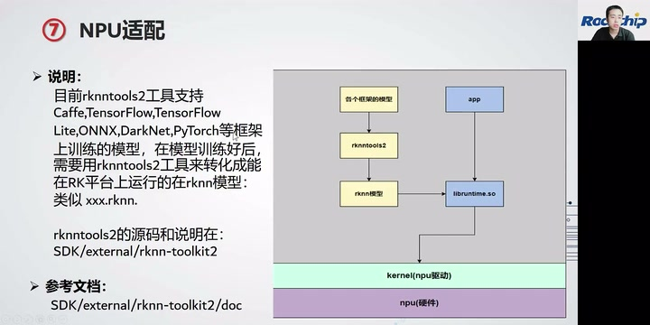
NPU 模型转换与运行架构；rknn-toolkit2 支持多种模型框架，转换为 .rknn，源码与文档位于 SDK/external/rknn-toolkit2。 · 原片 46:50
原画面列出的框架包括 Caffe、TensorFlow、TensorFlow Lite、ONNX、DarkNet、PyTorch。训练模型经 rknntools2 转为
xxx.rknn；APP 通过libruntime.so接到 Kernel 的 NPU 驱动与 NPU 硬件。源码及说明位于SDK/external/rknn-toolkit2，文档在其doc目录。
SDK 测试、验收与更新反馈¶
最后，可能有些开发者关注测试验收，或者性能对比的问题。我们在平台上集成了一些性能测试工具，也有出具对应测试数据。大家可以做 RK 各个平台横向对比，也可以跟其他厂商或友商做性能对比，方便选型。
再一个，我们提供了模块功能和压力测试，可以参考这个文档。其实我们内部整理的一些测试方法或者测试脚本，也集成在 SDK 当中，大家可以使用，或者提出改进意见。
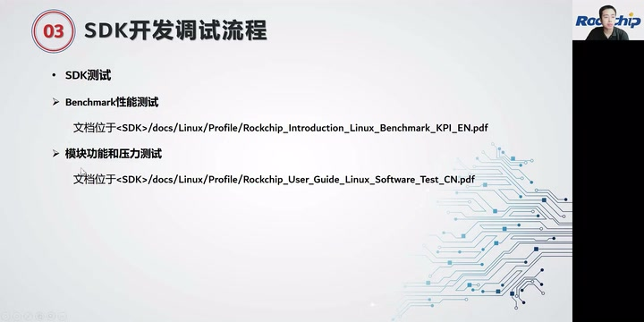
SDK 测试文档：Benchmark 性能与模块功能/压力测试，位于 docs/Linux/Profile。 · 原片 47:47
SDK 调试过程中遇到的问题，第一，大家及时看一下我们定期更新的简报，有没有大家手上遇到的，或者一直没有解决的问题，可能我们 SDK 更新同时有解决。另外，遇到的问题可以提到我们的 Redmine 系统。刚有提到为了比较高效地用这个系统，大家可以把问题描述清楚，然后定期跟进。
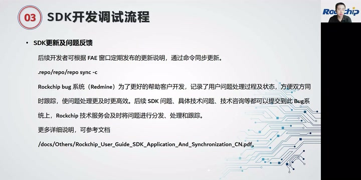
SDK 更新及问题反馈原画面：repo sync -c、Redmine 问题处理跟踪和 SDK 申请同步指南。 · 原片 48:39
画面中的同步更新命令为
.repo/repo/repo sync -c。参考文档：/docs/Others/Rockchip_User_Guide_SDK_Application_And_Synchronization_CN.pdf。
现场答疑：工业级、NPU 专场与 RK3399 Pro¶
最后一个环节，是针对这场直播上面的问题，做集中解答。如果还有其他问题，可以现在留言，我们等一下具体交流。或者对本场直播有什么建议，也可以提一下。
有个叫立安的问：“有没有工业级的？”RK3588 后面应该有个 RK3588……J 的型号。
工业级后缀在源转写中有“Go/J”等异文，现场答疑画面没有显示型号，定向音频复核仍不足以确定完整型号后缀，保留讲者“应该”口吻。
有个致远的同学问：“NPU 能不能直播学习一下？”我们前几天有 NPU 专场直播，明天还有一场 NPU 直播，大家可以关注一下。
有个 WJY 同学问：“SDK 和 3399 Pro 有哪些部分区别？”其实大多数功能一样，只是针对 RK3588，首先性能更强，第二有些模块 IP 做了迭代升级，其实差不了太多。3399 Pro 的 NPU 其实也是早之前的版本，我们针对 NPU 这块工具也是有做改进的。
Linux 系统、工具，包括文档，大多数通用。包括 3399 Pro，我们今年也会升级到可能 5.10 上面去。
平板技术支持、32 路编解码与 MIPI 屏¶
有个叫一只胖兔子的问：“如果把它做成平板，公司会提供哪些技术支持？”我们会提供常规技术支持，包括 Redmine 上面的支持。如果有额外技术支持需求，可以跟业务同事反馈，也可以做更进一步交流。
有个胖虎同学问：“RK3588 有 32 路编解码的测试 Demo？”我印象中是有的。到时候你可以提个 Redmine，或者怎么样，我到时候回复你一下。
有个国辉同学说：“RK3588 接 MIPI 屏，在 RK3568 上调好的，MIPI 信号均有输出，屏不亮。两平台有些什么区别？”因为 MIPI DSI 的 IP 也有些不一样，实际上可能要调一下具体时序，或者看一下是什么问题。
刘建平同学问：“可以支持 16 个 Camera 吗？”
Camera 路数、Wayland、AR / VR 与开源范围¶
如果单纯由 MIPI 进来，最多可以支持 6 路摄像头直接使用。不清楚你这 16 个是不是模拟输入，有那种转接芯片，四转一进来，可能也是可以的。
独自等待问：“能否支持 Wayland 显示？”这个可以支持。另外张浩同学问 AR、VR，目前主要用 Android SDK 做，所以 Linux SDK 目前还没有客户用去做 AR、VR，可能选 Android 会更好。
彭先林问：“Linux SDK 是否开源开放？”其实大家现在获取的 SDK，基本上全部代码是开源的。只有部分，包括前级 DDR bin，还有 Trust 相关 bin，我们没有开源，其他大多数都是开源的。
致远同学问：“机器人用在什么方面？”有些用在工业领域，然后有些，我目前也不清楚具体产品应用到什么领域，只是我们做一些技术支持。有些客户项目是保密的，也没有跟我们透露太多。
郭辉同学问：“3588 支持 3568 AVL 适配过的摄像头吗？”我们的 AVL 里面会具体写哪些平台有适配过，这可以看一下。
我看很多人说刚刚声音有点小，直播的时候，下次会大声一点。
Rockit 版本、FFmpeg、课件与 DDR 大小¶
孙向军同学问：“Rockit 在哪个版本发布？”现在 Rockit 已经发给一些客户试用。正式发布，可能下个版本，应该是八月底或九月初的版本，会带 Rockit 正式版本，就是说通用 Linux SDK 会带上。
orange 问：“可以适配 FFmpeg 吗？”我们有做适配，主要它这里面，这个东西……
加载中问：“有没有课件文件？”到时候可以关注一下我们公众号。
洋洋问：“DDR 大小改了，哪些地方要适配？”这个可以做兼容，自动探测，不需要改。
不要 Recovery、A/B 升级与双屏异显¶
曲伟问：“Recovery 可以不要吗？”可以不要。如果不要，可以实现 A/B 分区，做后台静默升级，相当于类似 Android 那样。我们实现了 A/B 分区切换升级，这可以做，但 misc 分区一定要。
西瓜瓜问：“Linux 下如何双屏异显两个 UI？”这个在显示相关文档里面有提到。
你可以去看一下。
Buildroot 下载、实时补丁、算法 Demo 与 ISP 延时¶
致远问：“Buildroot 有个别下载链接失效。”Buildroot 有些软件包需要在线获取、在线下载，所以可能要保证编译环境有带 VPN。
流鱼问：“RT 补丁有了吗？”应该是问 RT Linux 补丁。这个现在内部已经有一个版本，正在集成测试，预计也是九月份发布，就是实时 Linux 的补丁。
东驰问：“24 路、8 帧每秒周期的算法，有 Demo 吗？”我们 NPU 下面应该有对应 Demo，但是我帮你确认一下。
有个同学问：“RK3588S ISP 到出图可以优化在 80 秒内吗？”不知道提的是 80 毫秒还是……这个咱们可以后面交流一下。
“Linux 下如何双屏异显两个 UI，不用鼠标拖动，可以直接设置坐标？”这个可以实现，包括之前常用的云终端，都支持双屏异显。刚说的文档里面有具体介绍。
新 Wi-Fi 驱动与 Docker¶
早樱花盛开问：“新的 Wi-Fi 模块驱动怎么加载到系统？”一般驱动可以 built-in 在 Kernel，或者编成 ko，在系统起来的时候 insmod。
“Docker 相关代码会开源吗？”这部分我们没有做闭源，就是可以使用。大家可以用 Docker 做一些虚拟化开发，包括有些客户用 3588 做云服务器，也都用到 Docker 技术。
智能座舱、GUI 与工具获取¶
“RK3588 可以用来做智能座舱吗？”可以用，但不一定用这套系统。目前 RK3588 也在移植现在主流智能座舱使用的系统，后面可能会发布。
初心问：“GUI 是用 Qt 还是什么？”可以用 Qt，也可以用 MiniGUI，也可以用其他 LVGL，都可以。也可以不用这些框架，自己实现 UI 绘制，也是可以的。
洋洋问：“RK3588 SVTuner 工具在哪里可以下载？”在 Redmine 和 SDK 上面，应该都有。
工具名“SVTuner”据源转写保留；答疑画面无工具文字可交叉核对。
DDR 为什么没有开源¶
有个叫雨茶的问：“DDR 为什么不开源？”因为这里面其实有一些比较核心内容，并不适合开源，包括如何去启动、如何做芯片引导，有些比较核心或者敏感的东西，不适合开源。我们也支持，有些平台也支持 TPL 方案。
就不需要用到 DDR bin。有些希望所有代码都开源的，可以试用那种 TPL 方案。
量产时怎样测试 DDR¶
“量产的时候怎么测试 DDR 比较好？”其实我们测试主要覆盖几个部分。第一个是 DDR 压力测试，可以使用 memory test（音近，具体工具名待核），或者 stress app test，这些命令，测试高负载场景下 DDR 数据拷贝，会不会有数据比特位翻转，或者会不会有内核崩溃，这可以测试。
定向音频转写恢复了“stress app test”；首个工具仍识别为“memoral test / memory test”，音不清，不将推测的拼写写成可执行命令。
另外，要做一些不停重启的老化实验。SDK 有对应脚本，大家可以参考。也就是说，我们发布 SDK 时，已经对平台，不管是对应的硬件——就是指定的 EVB 板子，然后对应 SDK，比如具体到 v1.0.0 软件，我们会进行所有稳定性测试。
现场答疑页与同一讲者，后半课程持续答疑直到 DDR 测试、截屏与闭幕。 · 原片 01:02:22
Linux 截屏¶
最后有人说：“Linux 截屏通过什么方案实现？”像我们的 VOP，有获取截屏的接口，还有一些显示框架，默认带截屏接口。比如 Qt，或者 LVGL，它们有一些截屏接口，可以获取截屏信息。
也可以直接读 VOP 接口，dump 出 VOP 的数据。
其他朋友还有没有什么问题？RK3588 支持 Debian 11，对。
很高兴今天在这边跟大家交流，有些可能准备不好的地方，也请大家谅解。后续我们也会继续对 Linux SDK 迭代完善，接收大家的建议和意见。其他就谢谢大家。
之后，大家也可以从其他途径继续交流，比如 Redmine，或者邮件，都可以继续交流。我今天直播的分享就到这边了，也希望下次有机会跟大家再次分享一些其他内容。预祝大家产品开发顺利，今天直播就到这边结束，感谢大家。